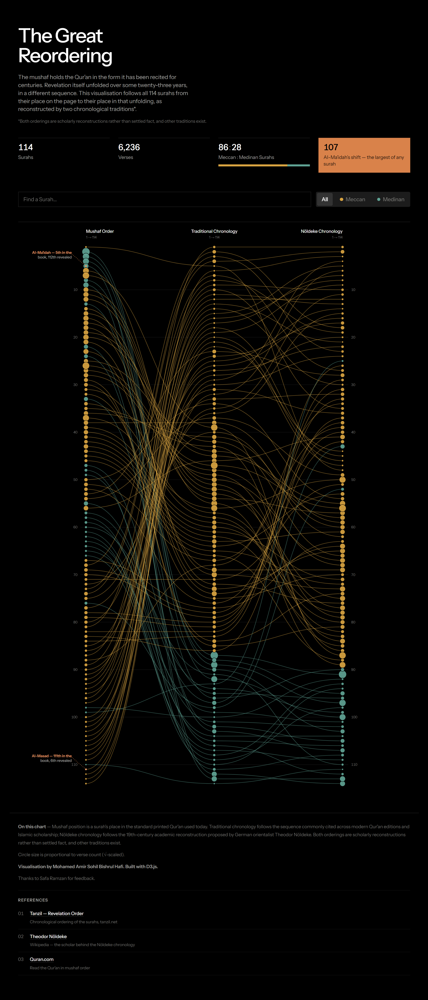

The Great Reordering
114 surahs, followed from their place on the page to their place in revelation's unfolding.

Overview
The mushaf (physical copy of the Qur'an) holds the Qur'an in the form it has been recited for centuries. Revelation itself unfolded over some twenty-three years, in a different sequence. The brief I gave myself for this piece was to follow all 114 surahs (chapters)from their place on the page to their place in that unfolding, as reconstructed by two chronological traditions, and to make this difference visible.
A table can state the two orders side by side. What it can't show is how far each surah travels, in which direction, and which ones barely move at all. That gap between knowing the orders differ and seeing how they differ is what I created this visualisation to close.
The Approach
A three-lane bump chart: Mushaf Order, Traditional Chronology, and Nöldeke Chronology, each ranked 1 to 114. Every surah is a single curved line connecting its three positions, which visualises movement.
Two encodings sit on top of the lines. Circle size is proportional to verse count (square-root scaled), and colour separates Meccan from Medinan.
The interaction layer carries the detail:
- Hovering or selecting a surah dims the other 113 and opens a card with its name and meaning, verse count, its rank in all three orderings, and its net shift in plain language.
- When the two chronologies place a surah 20 or more places apart, the card adds a note that scholars seem to disagree significantly there, with both ranks and the gap.
- The side panel includes a brief description of the surah, its verse count, and its position in each order.
- A search box finds a surah by name, and Meccan and Medinan chips filter the chart.
- The largest-reordering stat card is clickable and jumps straight to that surah.
- Two on-chart callouts mark the biggest movers in each direction.
"Net shift" here is measured as mushaf position minus Traditional position. The 107 headline figure is therefore a book-versus-Traditional-chronology number, not a Nöldeke one.
The Two Chronologies
Follows the sequence commonly cited across modern Qur'an editions and Islamic scholarship. In this ordering, all 86 Meccan surahs fall in positions 1 to 86 and all 28 Medinan surahs in 87 to 114, a clean split.
The 19th-century academic reconstruction proposed by the German scholar Theodor Nöldeke. Here the Meccan/Medinan line is less tidy.
The two chronologies sit an average of about 17 places apart per surah. 43 surahs differ by 20 or more places, 18 by 30 or more, and 32 differ by five or fewer. Only five surahs get identical positions in both: Al-Alaq, Ash-Sharh, Al-Kahf, Al-Munafiqun, and At-Tawba. The widest gap is Az-Zalzalah, 93rd in the Traditional order and 25th in Nöldeke's.
The Outcome
The largest single reordering is Al-Ma'idah: 5th in the mushaf, 112th in the Traditional chronology (and 114th in Nöldeke's), a shift of 107 places. At-Tawba follows at 104, placed 9th in the book and 113th in revelation. The largest move in the opposite direction is Al-Masad, 111th in the book and 6th revealed (105 places earlier), while Al-Alaq, 96th in the book, sits first in both chronologies.
The direction of travel is lopsided. Against the Traditional order, 70 surahs were revealed later than their book position suggests, 41 earlier, and only three hold the same position (Saad, Nuh, Al-Infitar). The front of the mushaf shows why: surahs 2 to 5 (Al-Baqarah, Ali 'Imran, An-Nisa, Al-Ma'idah) are all Medinan and rank 87th, 89th, 92nd, and 112th in the Traditional order. At the other end, the last 37 surahs of the book average 36th in revelation order.
Size and order tell a second story. Al-Baqarah is the largest circle on the chart at 286 verses, and it sits 87th in the Traditional order, while three-verse surahs such as Al-Kawthar (15th) and Al-'Asr (13th) fall among the earliest. Across the whole set, Meccan surahs account for 86 of the 114 and 4,613 of the 6,236 verses, about 74%.
The order of the Mushaf is not the chronology of revelation.